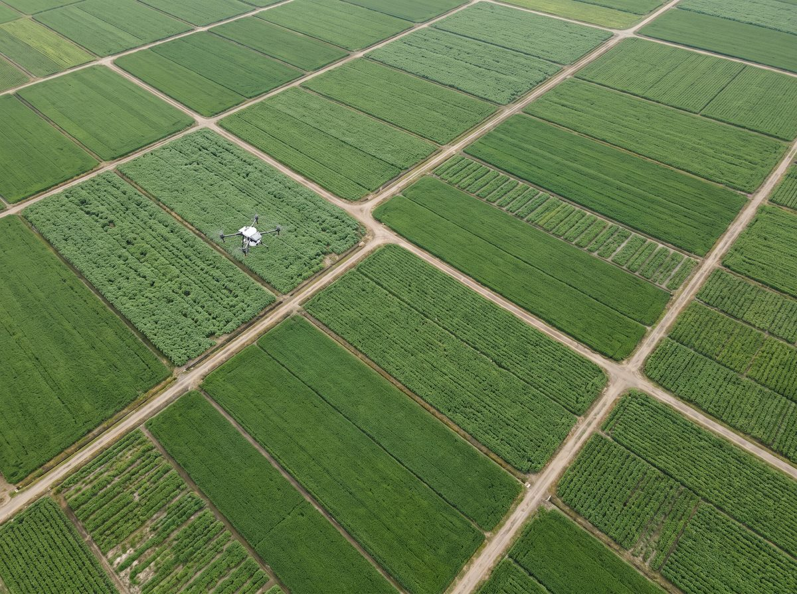
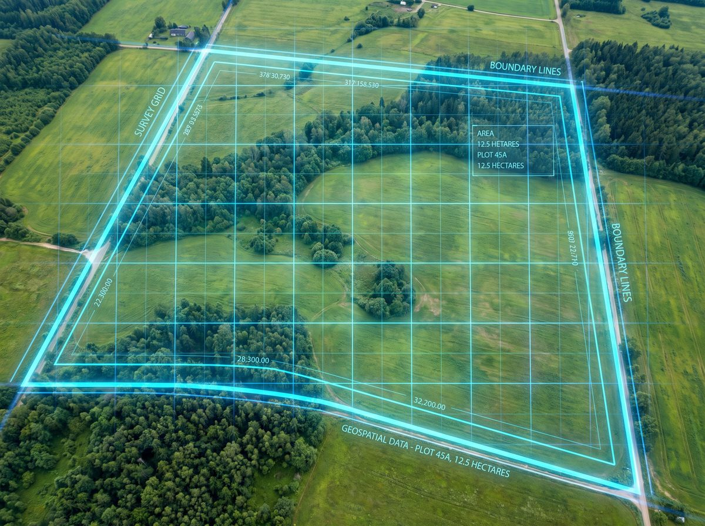
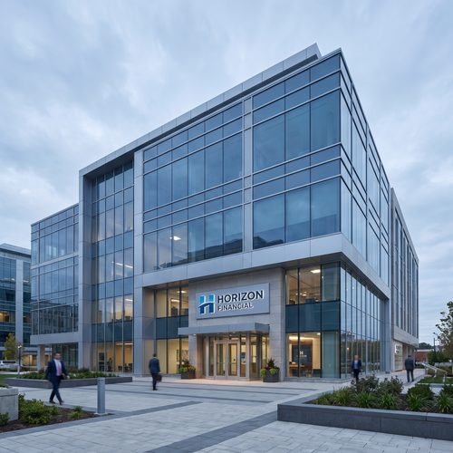

Partners / Business Collaboration合作伙伴 / 商业合作Rakan Kongsi / Kerjasama Perniagaan
Connecting industry, technology, finance and insurance — driving drone adoption and value growth together.连接产业、技术、金融与保险，共同推动无人机应用落地与价值增长。Menghubungkan industri, teknologi, kewangan dan insurans — memacu penerimaan dron dan pertumbuhan nilai bersama-sama.
Partnership Areas合作领域Bidang Kerjasama

Agriculture Crop Protection农业植保Perlindungan Tanaman Pertanian
Drone spraying and monitoring, improving operational efficiency and lowering cost.无人机喷洒与监测，提升作业效率，降低成本。Semburan dan pemantauan dron, meningkatkan kecekapan operasi dan menurunkan kos.

Aerial Mapping航拍测绘Pemetaan Udara
High-precision aerial surveying and 3D modelling, supporting planning, management and decisions.高精度航拍与三维建模，助力规划、管理与决策。Tinjauan udara berketepatan tinggi dan pemodelan 3D, menyokong perancangan, pengurusan dan keputusan.
Building Cleaning & Inspection建筑清洗 & 巡检Pembersihan & Pemeriksaan Bangunan
High-rise cleaning and remote inspection, ensuring safety and boosting efficiency.高空清洗与远程巡检，保障安全，提升效率。Pembersihan bangunan tinggi dan pemeriksaan jarak jauh, memastikan keselamatan dan meningkatkan kecekapan.
Public Sector Support公共部门支援Sokongan Sektor Awam
Supporting public safety and enhancing urban governance capability.协助公共安全，监管城市治理能力提升。Menyokong keselamatan awam dan meningkatkan keupayaan tadbir urus bandar.
Drone Shows无人机表演Persembahan Dron
Creative drone light shows that elevate brand and event experiences.创意无人机灯光表演，点亮品牌与活动效果。Persembahan cahaya dron kreatif yang meningkatkan pengalaman jenama dan acara.
Technology Collaboration技术合作Kerjasama Teknologi
Joint R&D and technology integration, together advancing the drone innovation ecosystem.联合研发与技术整合，共提无人机创新生态。R&D bersama dan integrasi teknologi, bersama memajukan ekosistem inovasi dron.
Partnership Ecosystem合作生态Ekosistem Kerjasama

Banks / Financial Institutions银行 / 金融机构Bank / Institusi Kewangan
Providing more flexible financing plans, supporting equipment purchases and project delivery to create sustainable business value together.提供更灵活资费方案，支持设备采购与项目落地，共创可持续商业价值。Menyediakan pelan pembiayaan yang lebih fleksibel, menyokong pembelian peralatan dan penyampaian projek untuk mencipta nilai perniagaan yang mampan bersama-sama.
Insurance Companies保险公司Syarikat Insurans
Tailored drone insurance and risk management plans, ensuring flight safety and worry-free operations.定制无人机保险与风险管理方案，保障飞行安全与运营无忧。Pelan insurans dron dan pengurusan risiko yang disesuaikan, memastikan keselamatan penerbangan dan operasi tanpa risau.
Enterprise / Government / Agriculture Clients企业 / 政府 / 农业客户Pelanggan Perusahaan / Kerajaan / Pertanian
Serving different industries and government agencies with tailored drone solutions and long-term service.面向不同行业与政府机构，提供定制化无人机解决方案与长期服务。Berkhidmat kepada pelbagai industri dan agensi kerajaan dengan penyelesaian dron yang disesuaikan dan perkhidmatan jangka panjang.
Technology Partners技术伙伴Rakan Teknologi
Deep collaboration across hardware, software and data, jointly driving technology innovation and ecosystem building.在硬件、软件与数据领域深度协作，共同推动技术创新与生态建设。Kerjasama mendalam merentasi perkakasan, perisian dan data, bersama memacu inovasi teknologi dan pembinaan ekosistem.
As a connector, Drone X brings together industry, finance, insurance and technology resources to build a win-win ecosystem — accelerating drone adoption and creating greater social and commercial value.Drone X 作为连接者，整合产业、金融、保险与技术资源，构建共赢生态，加速无人机应用落地，创造更大社会与商业价值。Sebagai penghubung, Drone X menyatukan sumber industri, kewangan, insurans dan teknologi untuk membina ekosistem yang saling menguntungkan — mempercepatkan penerimaan dron dan mencipta nilai sosial serta komersial yang lebih besar.
Why Choose Drone X为什么选择 Drone XMengapa Pilih Drone X
Expertise & Experience专业与经验Kepakaran & Pengalaman
Deep roots in the drone industry, with extensive project experience and technical know-how.深耕无人机行业，拥有丰富的项目经验与技术积累。Berakar umbi dalam industri dron, dengan pengalaman projek dan kepakaran teknikal yang luas.
Compliance & Safety合规与安全Pematuhan & Keselamatan
Following CAAM regulatory standards, with a comprehensive safety and quality management system.遵循 CAAM 法规标准，建立完善的安全与质量管理体系。Mematuhi piawaian peraturan CAAM, dengan sistem pengurusan keselamatan dan kualiti yang menyeluruh.
End-to-End Service端到端服务Perkhidmatan Hujung ke Hujung
From solution design and implementation to ongoing operations, with full-chain service and continuous technical support.从方案设计、实施到运维，提供全链路服务与持续技术支持。Daripada reka bentuk penyelesaian dan pelaksanaan hingga operasi berterusan, dengan perkhidmatan rantaian penuh dan sokongan teknikal berterusan.
Long-Term Value长期价值Nilai Jangka Panjang
Driven by customer success, helping partners achieve long-term value growth.以客户成功为导向，助力合作伙伴实现长期价值增长。Didorong oleh kejayaan pelanggan, membantu rakan kongsi mencapai pertumbuhan nilai jangka panjang.
Partnership Process合作流程Proses Kerjasama
Requirement Discussion需求沟通Perbincangan Keperluan
Understanding your goals and needs, clarifying the direction and value of collaboration.了解您的目标与需求，明确合作方向与价值点。Memahami matlamat dan keperluan anda, menjelaskan arah dan nilai kerjasama.
Proposal & Evaluation方案与评估Cadangan & Penilaian
Developing a tailored collaboration plan, assessing feasibility and expected outcomes.制定定制化合作方案，评估可行性与预期成效。Membangunkan pelan kerjasama yang disesuaikan, menilai kebolehlaksanaan dan hasil yang dijangka.
Partnership Agreement合作签约Perjanjian Kerjasama
Confirming collaboration details, signing the agreement and kicking off project implementation.确认合作细节，签订协议，启动项目实施。Mengesahkan butiran kerjasama, menandatangani perjanjian dan memulakan pelaksanaan projek.
Execution & Delivery项目执行与交付Pelaksanaan & Penyerahan
Executing the project efficiently, delivering results, with ongoing support and optimisation.高效执行项目，交付成果，并提供持续支持与优化。Melaksanakan projek dengan cekap, menyerahkan hasil, dengan sokongan dan pengoptimuman berterusan.
Partner With Drone X, Shape the Future Together携手 Drone X，共创未来Berkerjasama Dengan Drone X, Bina Masa Depan Bersama
Whether you represent a financial institution, insurance company, enterprise, government body or technology partner, we look forward to exploring the limitless possibilities of drone applications together.无论您代表金融机构、保险公司、企业、政府还是技术伙伴，我们都期待与您共同探索无人机应用的无限可能。Sama ada anda mewakili institusi kewangan, syarikat insurans, perusahaan, badan kerajaan atau rakan teknologi, kami menantikan untuk bersama-sama meneroka kemungkinan tanpa had aplikasi dron.